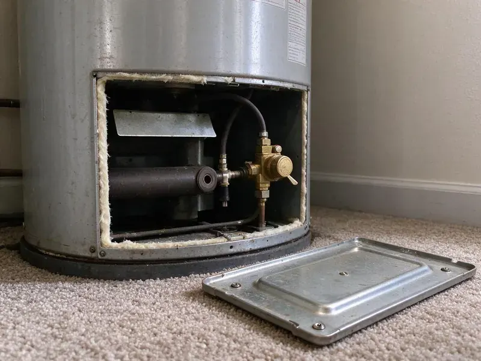

Sewer Repair in North Las Vegas, NV
For professional sewer repair services across North Las Vegas, NV, look no further than FMR Plumbing. Our licensed plumbers are ready to restore your house's plumbing.
- Spot Repairs or Full Line Replacement
- Written Repair Warranty
- Fast Sewer Diagnostics
- Durable Repairs

Need Same-Day Sewer Line Repair? Contact Us in North Las Vegas, NV.
Get a flat-rate sewer repair quote with video proof of the problem and a simple plan to fix it.
Skilled Sewer Repair Services in North Las Vegas, NV
FMR Plumbing handles sewer repair the way it should be done, with video first and a shovel second. Plenty of older homes were built with clay, cast iron or early ABS sewer pipe that is now cracking, separating or filling with roots. We fix the damaged section, test the line and leave your yard as close to how we found it as we can.
Our expertise includes:
- Video Camera Sewer Inspections
- Trenchless Sewer Line Repair
- HD Camera Inspections

Additional Plumbing Repair Services in North Las Vegas, NV
We offer expert plumbing repair services across North Las Vegas, NV to fix leaks, restore flow, and keep your system running smoothly.


Customers
Why Choose FMR Plumbing for Sewer Repair in North Las Vegas, NV?
Our team uses the latest technology to accurately pinpoint problems, making sure we address the root cause of your sewer line problems.
- Video Proof, You see the crack, root mass or belly on screen before you approve a single repair.
- Clear Pricing, You'll always get upfront, honest pricing before any work begins, with no hidden fees.
- Modern Equipment, We use advanced tools like sewer cameras and hydro-jetters for fast and effective service.
Citywide Coverage
FMR Plumbing is proud to serve every neighborhood and surrounding area of North Las Vegas for all sewer repair needs. Whether you're in the heart of downtown or the quiet suburbs, our team is ready to respond fast. We understand that sewer issues require immediate attention, and our local presence allows us to provide rapid service.
Experienced Team
The plumbers at FMR Plumbing are not just skilled technicians, they are true professionals with deep knowledge of the sewer systems common in North Las Vegas homes. They approach every sewer repair with precision and care, delivering a durable fix that complies with all local plumbing codes and safety standards.
Safety-First Approach
When FMR Plumbing takes on a sewer repair, we put first the safety of your family and our technicians. Our procedures are designed to meet or exceed all industry safety standards, including proper excavation and handling of materials, for code-compliant and secure work in your North Las Vegas home.
Trusted Certified North Las Vegas Plumbing Services Professionals
At FMR Plumbing, we take pride in providing certified plumbing services throughout North Las Vegas, NV. Backed by leading industry credentials, our experienced plumbers combine technical skill with genuine customer care. Whether it is repair, installation, or maintenance, we follow strict safety and quality standards to deliver long-lasting results you can trust.
Call Us Now PHCC Plumbing Contractor Recognition
PHCC Plumbing Contractor Recognition Better Business Bureau (BBB) Accreditation
Better Business Bureau (BBB) Accreditation Angi Certified Pro
Angi Certified Pro ISO 9001 Quality Management Certification
ISO 9001 Quality Management CertificationLong-Lasting Sewer Repair Services in North Las Vegas, NV
Commercial Sewer Repair in North Las Vegas
Beyond residential services, FMR Plumbing also provides dependable commercial sewer repair for businesses and properties in North Las Vegas. We understand the demands and higher usage rates of commercial plumbing systems. Our team is skilled in addressing larger diameter pipes, more complex layouts and stricter code requirements, so your business operations continue smoothly with minimal downtime. We prioritize efficient and durable solutions for commercial clients.

Root Intrusion Repair in North Las Vegas, NV
Tree and shrub roots go right for the moisture and nutrients leaking from old sewer joints. Once inside, they grow into dense mats that catch paper and waste. We cut the roots with a mechanical cutter or hydro-jetter, then repair or seal the joint so they cannot come right back. For lines with many rooted joints, we will show you when lining or replacement makes more sense than ongoing cleaning.
Sewer Line Hydro-Jetting in North Las Vegas
Hydro-jetting is a powerful cleaning method that uses high-pressure water streams to clear stubborn blockages, grease buildup and even tree roots from sewer lines. It's much more effective than snaking for thorough cleaning and preventing recurring clogs. This service is especially helpful for restaurants and commercial properties in North Las Vegas dealing with heavy grease accumulation, as well as homes with persistent drain issues.
Video Camera Sewer Inspection in North Las Vegas
Before any repair, we use advanced video camera inspection to accurately locate and assess sewer line damage. This involves inserting a flexible rod with a camera into your sewer line, allowing us to see blockages, cracks, root intrusion or pipe collapses in real time. This non-invasive method prevents unnecessary digging and helps us provide a precise diagnosis and repair plan. It's key for understanding issues in older homes in North Las Vegas and identifying problems like bellied pipes or collapsed sections.
Tree Root Invasion Solutions in North Las Vegas
Tree roots are a common culprit for sewer line damage in Nevada, attracted to the moisture and nutrients inside pipes. They can infiltrate tiny cracks, expand and eventually crush or clog the line. Our technicians are skilled at diagnosing root intrusion using camera technology. We can remove roots with specialized cutting tools and recommend preventive measures or durable pipe relining options to prevent future invasions, protecting your home's foundation.
Root Intrusion Removal in North Las Vegas, NV
Tree roots are a leading cause of sewer line blockages and damage, especially with the mature trees found in many North Las Vegas neighborhoods. Roots can work into tiny cracks, expand and eventually crush or clog pipes. We use specialized augers and hydro-jetting to cut through and remove roots, followed by inspection to assess pipe condition. For ongoing issues, we might recommend trenchless repair or pipe replacement to prevent future root problems.
Trenchless Sewer Line Repair in North Las Vegas, NV
For many sewer line issues, especially those caused by tree roots or pipe corrosion, trenchless repair offers a less invasive solution. This method, which includes pipe bursting or pipe lining, requires minimal excavation, saving your yard and landscaping from major disruption. We use specialized equipment to either pull a new pipe through the old one or insert a resin-coated liner that cures in place, creating a new, durable pipe inside the old one. It's an efficient and popular choice for protecting property appearance in North Las Vegas.

Sewer Camera Inspection in North Las Vegas
Every sewer repair starts with a look inside the pipe. We run a self-leveling camera from your cleanout or a pulled toilet and record the full length of the line. A sonde in the camera head lets us mark the exact location and depth of every problem on the surface. You get a copy of the video and a plain-English summary of what we found. This step alone often saves homeowners from paying for repairs they do not need.
Sewer Repair Near Me in North Las Vegas, NV
Being local also means we know the soil, the typical pipe materials and the city inspection process here. That knowledge speeds up the job and avoids surprises once the trench is open. Call us and we will schedule a sewer camera inspection at a time that works you.
When you search for sewer repair near me, you want a crew that can show up, find the problem and fix it without a week of back and forth. Our local plumbers keep cameras and repair materials on the truck so most diagnoses happen on the first visit. We give you a fixed price before work starts.
FMR Plumbing at a Glance
- Licensed and insured plumbers serving North Las Vegas, NV
- 24/7 emergency service with same-day scheduling
- Upfront, flat-rate pricing before work begins
- 4.8-star rated by 903+ Nevada customers
North Las Vegas Map
North Las Vegas Information
- Population
- 284,771
- Area codes
- 702/725/775
- Service area
- North Las Vegas and communities within 40 miles
- Nearby
- Sunrise Manor, Las Vegas, Winchester, Whitney
Sewer line condition matters in North Las Vegas, NV, where soil movement and tree growth can put pressure on pipes and lead to cracks, blockages and root intrusion that require expert repair.
Expert Services
Trust our professionals for reliable FMR Plumbing solutions in North Las Vegas, NV.
Our Specialized Plumbing Services in North Las Vegas, NV
At FMR Plumbing, we provide a complete range of plumbing services across North Las Vegas, NV. From leak detection to full system installations, our team ensures fast, precise, and affordable service for both residential and commercial properties. Explore our core services below:


How Our Sewer Repair Process Works in North Las Vegas, NV
Our sewer repair process is built around showing you the problem first and fixing it once.
Request a Quote
Contact FMR Plumbing by calling (725) 360-1766 to describe your sewer problem and schedule an appointment. We'll gather initial details and set up a convenient time for a technician visit.
Thorough Inspection
Our expert plumbers arrive on time and conduct a detailed sewer camera inspection to correctly diagnose the issue. We'll pinpoint the exact location and nature of the problem, whether it's a clog, break or root intrusion.
Clear Solutions
Based on the inspection, we provide a clear, upfront estimate and discuss the best repair options for your situation. We explain the process, materials and expected timeline, so you understand every step.
Frequently Asked Questions About Sewer Repair in North Las Vegas
A single spot repair usually runs $1,500 to $4,500 depending on depth and access. Trenchless lining usually costs $80 to $250 per foot, and full replacement of a typical residential line ranges from $5,000 to $15,000. We give you a written quote after the camera inspection is done.
The length of a sewer repair depends heavily on the scope of work. Simple spot repairs or hydro-jetting might take a few hours. Trenchless repairs like pipe lining can usually be completed in one to two days. Full sewer line replacements involving excavation can take anywhere from two to five days, depending on the length and complexity of the line.
For sewer line replacements, we primarily use durable, code-compliant materials such as PVC for its longevity and resistance to corrosion, or HDPE for trenchless applications. We select the best material based on your needs and local soil conditions.
Sewer repair is complex and best left to licensed professionals due to the specialized equipment required, potential health hazards and strict local plumbing codes. Attempting DIY repairs can lead to further damage, costly mistakes and even safety risks. Always consult with a professional plumber.
Yes, FMR Plumbing stands behind the quality of our sewer repair work. We offer warranties on parts and labor for our sewer repair services. The specific terms and length of the warranty will be discussed with you before any work begins, giving you peace of mind about your investment.
Yes, major sewer line repairs or replacements in North Las Vegas, NV typically require a plumbing permit from the local authorities. This ensures the work meets safety and code standards. FMR Plumbing handles all necessary permitting for you, so your repair is fully compliant.
We work with all common types of sewer pipe found in North Las Vegas and Nevada, including PVC, ABS, cast iron, clay and Orangeburg. Our technicians are experienced in repairing and replacing lines made from various materials, ensuring compatibility and durability with current plumbing standards. We also use high-quality, code-compliant replacement materials.
Trenchless sewer repair is a method of repairing or replacing sewer lines with minimal digging, often requiring only one or two access points. It involves techniques like pipe bursting, where a new pipe is pulled through the old one, or pipe lining, where a resin-impregnated liner is inserted and cured inside the existing pipe. This protects your landscaping and is less disruptive than traditional methods.
What People Are Saying About Our Plumbing Experts?

Patricia H.
We had a slab leak that two other companies could not find. FMR Plumbing located it in under an hour, explained our options, and the price matched the quote to the dollar.
Slab Leak Repair · Whitney, NV
Sofia M.
Two new toilets installed in one visit, no mess left behind, and the tech even adjusted a faucet he noticed was dripping. Fair pricing and really friendly.
Toilet Installation · Whitney, NV
Emily R.
I called FMR Plumbing for plumbing repair, and the technician was fast, polite, and thorough. They explained the problem clearly and fixed it the same day. I will definitely hire them again. Highly recommended!
Plumbing Repair · Spring Valley, NV
Robert G.
The trenchless sewer replacement saved our front yard. They walked us through the camera inspection footage first so we knew exactly what we were paying for.
Sewer Line Replacement · Las Vegas, NV
Mark T.
When our office needed drain cleaning, FMR Plumbing provided quick, reliable service. The plumber arrived on time and made sure every drain flowed perfectly before leaving. Very satisfied.
Drain Cleaning · Winchester, NVJames P.
Our commercial plumbing system had a leak under the sink, and FMR Plumbing handled it professionally. The plumbers arrived quickly and restored everything without disruption to our customers.
Commercial Plumbing · Winchester, NV